Calamaria
The genus Calamaria (family Colubridae) has 67 species in SnakeList (none venomous), recorded in 14 countries.
- 67species
- 67non-venomous
- 14countries
About the genus
A genus of the family Colubridae (colubrids).
Species
Showing 67 species
- No photo yetAlcala's Reed SnakeCalamaria alcalai
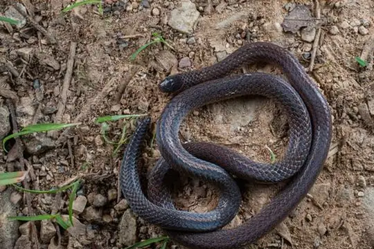
Anderson's Reed SnakeCalamaria andersoni- No photo yetApreocular Reed SnakeCalamaria apraeocularis
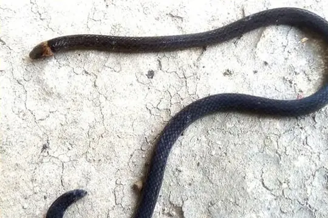
Banggai Reed SnakeCalamaria banggaiensis- No photo yetBattersby's Reed SnakeCalamaria battersbyi
- No photo yetBengkulu Reed SnakeCalamaria alidae
 Bicoloured Reed SnakeCalamaria bicolor
Bicoloured Reed SnakeCalamaria bicolor- No photo yetBleeker's Dwarf SnakeCalamaria margaritophora
- No photo yetBoeseman's Reed SnakeCalamaria boesemani
 Boie's Dwarf SnakeCalamaria virgulata
Boie's Dwarf SnakeCalamaria virgulata Bornean Reed SnakeCalamaria borneensis
Bornean Reed SnakeCalamaria borneensis- No photo yetBrongersma's Reed SnakeCalamaria brongersmai
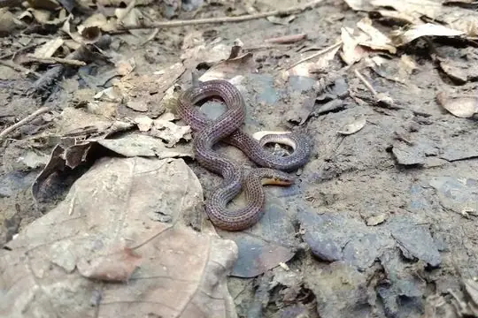
Buton Island Dwarf SnakeCalamaria butonensis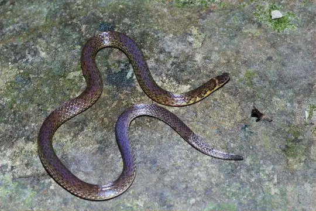
Ceram Dwarf SnakeCalamaria ceramensis- No photo yetClouded Reed SnakeCalamaria nebulosa
 Collared Reed Snake (leucogaster)Calamaria leucogaster
Collared Reed Snake (leucogaster)Calamaria leucogaster Collared Reed Snake (pavimentata)Calamaria pavimentata
Collared Reed Snake (pavimentata)Calamaria pavimentata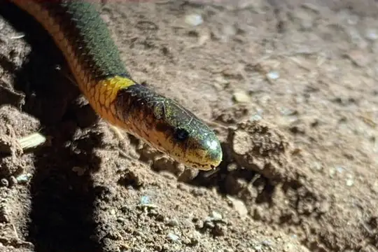
Dalat Dwarf SnakeCalamaria buchi- No photo yetDark-bellied Reed SnakeCalamaria curta
- No photo yetDominic’s reed snakeCalamaria dominici
- No photo yetDöderlein's Reed SnakeCalamaria doederleini
- No photo yetEiselt's Reed SnakeCalamaria eiselti
- No photo yetEverett's Reed SnakeCalamaria everetti
- No photo yetForcart's Reed SnakeCalamaria forcarti
 Gervais' Reed SnakeCalamaria gervaisii
Gervais' Reed SnakeCalamaria gervaisii- No photo yetGia Lai Reed SnakeCalamaria gialaiensis
 Grabowsky's Reed SnakeCalamaria grabowskyi
Grabowsky's Reed SnakeCalamaria grabowskyi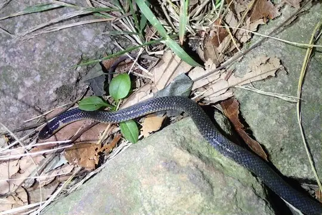
Hong Kong Dwarf SnakeCalamaria septentrionalis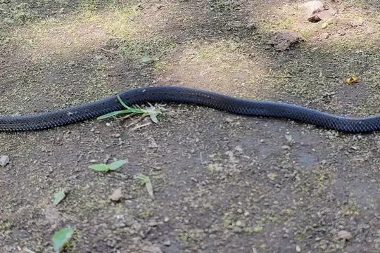
Javanese Reed SnakeCalamaria javanica- No photo yetJolo Worm SnakeCalamaria joloensis
- No photo yetKapuas Reed SnakeCalamaria melanota
 Lined Reed SnakeCalamaria griswoldi
Lined Reed SnakeCalamaria griswoldi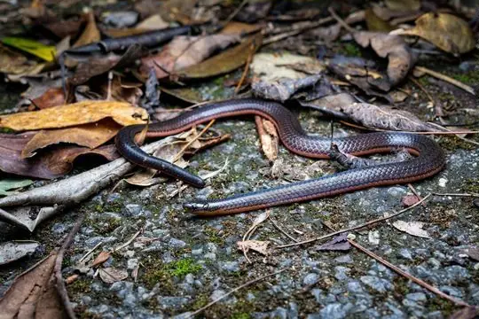
Lingnan Reed SnakeCalamaria arcana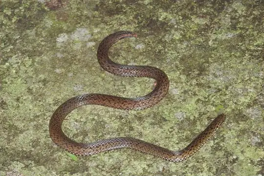
Linne's Dwarf SnakeCalamaria linnaei- No photo yetLong-snouted Dwarf SnakeCalamaria longirostris
 Low's Reed SnakeCalamaria lovii
Low's Reed SnakeCalamaria lovii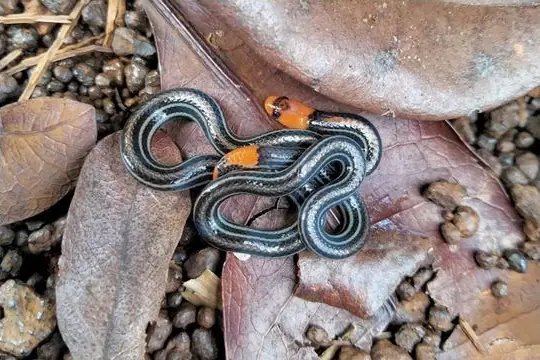
Lumholz's Reed SnakeCalamaria lumholtzi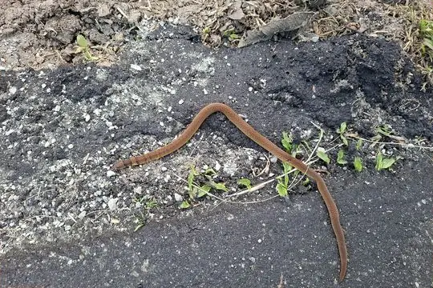
Luzon Dwarf SnakeCalamaria bitorques- No photo yetMechel's Reed SnakeCalamaria mecheli
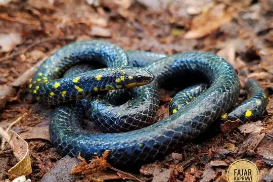
Modest Dwarf SnakeCalamaria modesta- No photo yetMueller's Reed SnakeCalamaria muelleri
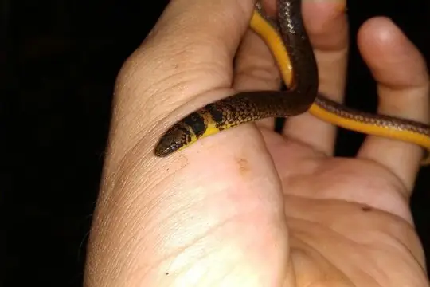
Narrow-headed Reed SnakeCalamaria nuchalis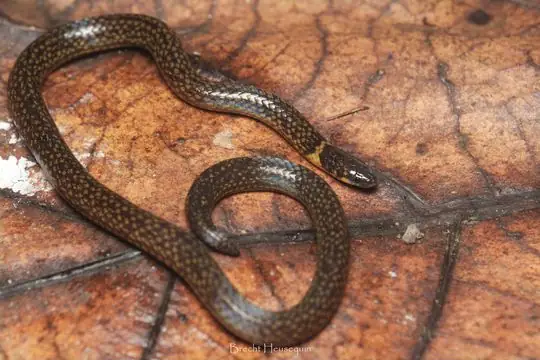
Padang Reed SnakeCalamaria abstrusa- No photo yetPalawan Worm SnakeCalamaria palawanensis
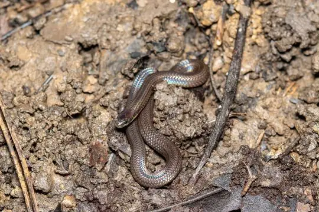
Pfeffer's Reed SnakeCalamaria pfefferi- No photo yetPointed Snout Reed SnakeCalamaria acutirostris
- No photo yetPrakke's Reed SnakeCalamaria prakkei
- No photo yetRebentisch's Reed SnakeCalamaria rebentischi
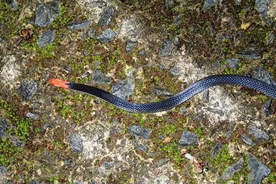
Red-headed Reed SnakeCalamaria schlegeli Samarinda Reed SnakeCalamaria hilleniusi
Samarinda Reed SnakeCalamaria hilleniusi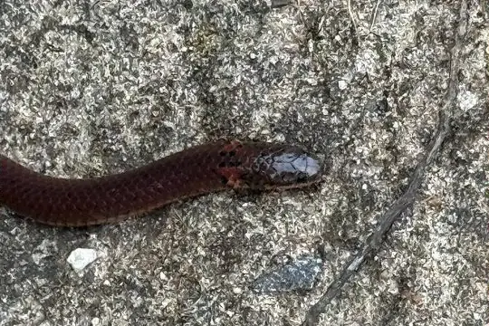
Sang's Reed SnakeCalamaria sangi Schmidt's Reed SnakeCalamaria schmidti
Schmidt's Reed SnakeCalamaria schmidti- No photo yetSlender Reed SnakeCalamaria gracillima
- No photo yetStriped- belly reed snakeCalamaria strigiventris
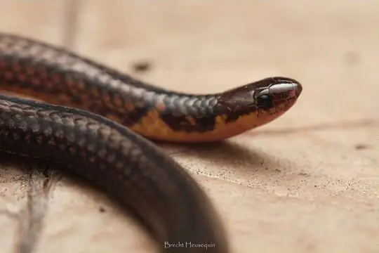
Sumatra Dwarf SnakeCalamaria sumatrana- No photo yetThanh's Reed SnakeCalamaria thanhi
- No photo yetThick Reed SnakeCalamaria crassa
 Tioman Reed SnakeCalamaria ingeri
Tioman Reed SnakeCalamaria ingeri- No photo yetUlmer's Reed SnakeCalamaria ulmeri
 Variable Reed SnakeCalamaria lumbricoidea
Variable Reed SnakeCalamaria lumbricoidea- No photo yetWhite-bellied Reed SnakeCalamaria albiventer
 White-striped Reed SnakeCalamaria lateralis
White-striped Reed SnakeCalamaria lateralis Yellow-bellied Reed SnakeCalamaria suluensis
Yellow-bellied Reed SnakeCalamaria suluensis- No photo yetYunnan Reed SnakeCalamaria yunnanensis
- No photo yetCalamaria abramovi
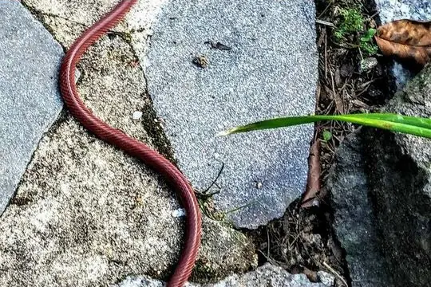
Calamaria concolor- No photo yetCalamaria lautensis
No snakes in Calamaria match.
About the genus Calamaria
- Family: Colubridae.
- Recorded in: Bangladesh, Bhutan, China, India, Indonesia, Japan, Laos, Malaysia, Myanmar, Philippines, Singapore, Taiwan, Thailand, Vietnam.